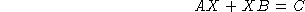
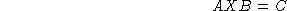
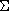

The problem of finding matrix X satisfying

or

where A and B are square matrices (of possibly different sizes) is a well-known problem. We refer to the first equation as the continuous Sylvester equation and the second, the discrete Sylvester equation.
These two problems can easily be formulated as  problems as follows:
function [LME,LMI,OBJ]=sylvester_eval(XLIST) [X]=XLIST(:) if flag=='c' then LME=A*X+X*B-C else LME=A*X*B-C end LMI=[] OBJ=[]with a solver function such as:
function [X]=sylvester(A,B,C,flag)
[na,ma]=size(A);[nb,mb]=size(B);[nc,mc]=size(C);
if ma<>na|mb<>nb|nc<>na|mc<>nb then error("invalid dimensions");end
XLISTF=lmisolver(zeros(nc,mc),sylvester_eval)
X=XLISTF(:)
Then, to solve the problem, all we need to do is to (assuming A, B
and C are defined)
--> X=sylvester(A,B,C,'c')for the continuous problem and
--> X=sylvester(A,B,C,'d')for the discrete problem.